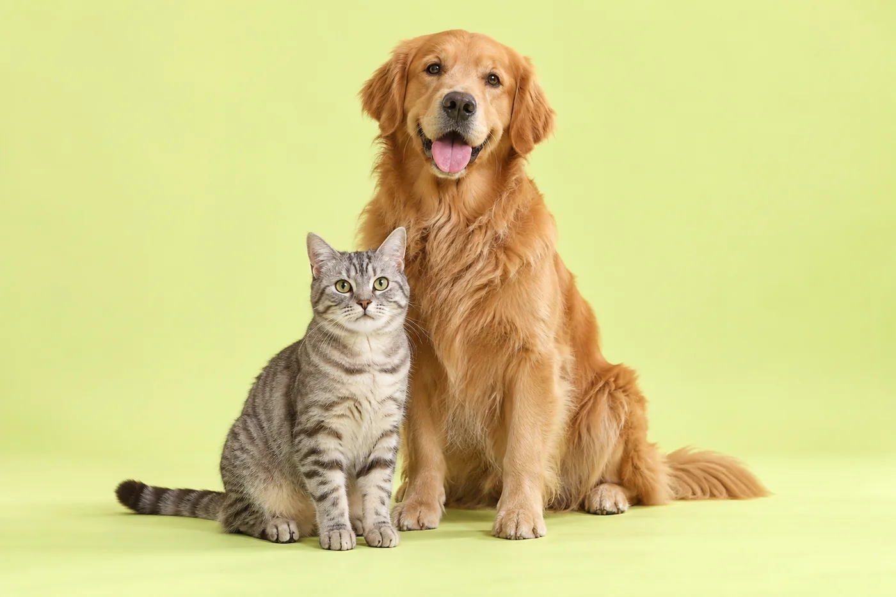
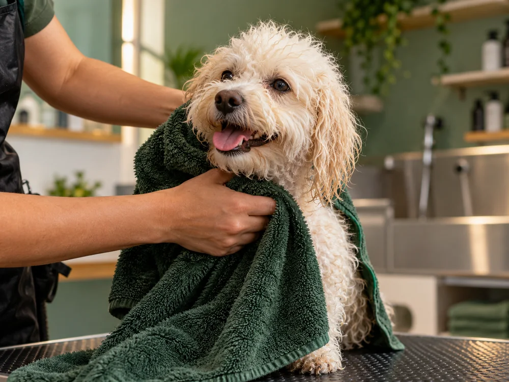

01 / CUIDAR
Banho & tosa
Limpeza e acabamento que respeitam a pelagem, o porte e o jeitinho do seu companheiro.
Um mundo de carinho, descobertas e pequenos momentos felizes. Para eles. Com você.
Entrar no petshopPequenas patas. Grandes amores.

Do banho gostoso ao brinquedo favorito, carinho em cada detalhe da rotina do seu melhor amigo.
DO FOCINHO À CAUDA
Uma rotina mais leve, cheirosa e feliz.
Descubra o que combina com o seu pet.

Limpeza e acabamento que respeitam a pelagem, o porte e o jeitinho do seu companheiro.
Cuidados de rotina e atenção aos detalhes para deixar o seu pet confortável no dia a dia.
Alimentação, brinquedos e acessórios para a hora de passear, brincar ou descansar.
Explorar categoriasBONS ACHADOS, PATAS FELIZES
Alimentos e petiscos para diferentes fases da vida do seu cão.
Bolinhas, mordedores e companhia para gastar energia.
Guias, peitorais e acessórios para descobrir o mundo juntos.
Caminhas e itens de conforto para a soneca depois da diversão.
Categorias ilustrativas. Marcas, valores e disponibilidade devem ser confirmados com a loja.
ESSA É A NOSSA ESSÊNCIA
A gente acredita que cuidar começa por conhecer: o que ele gosta, o que o deixa à vontade e o que faz seu rabinho balançar.
A Pata & Cia. nasceu como uma proposta simples: reunir carinho, atenção e boas escolhas em um só lugar.
Vamos nos conhecerUma experiência pensada para respeitar a personalidade e as necessidades de cada companheiro.
Espaço para conversar, tirar dúvidas e combinar os detalhes antes de cada atendimento.
Produtos e cuidados que fazem sentido para a rotina que vocês compartilham.
ANTES DA PRIMEIRA VISITA
Pequenas dúvidas,
conversas importantes.
Conte o nome, o porte e o tipo de pelagem do seu pet no formulário de contato. A equipe deverá confirmar o cuidado indicado, o valor e o horário antes de qualquer agendamento. Nesta demonstração, nenhum atendimento é reservado.
O site apresenta categorias de produtos para cães e gatos. Para serviços de higiene em gatos, consulte previamente as condições e a disponibilidade da loja.
Converse com a equipe antes da visita e informe as orientações já recebidas do veterinário. A disponibilidade de cada cuidado deve ser confirmada de acordo com as necessidades do seu pet.
Você pode explorar as categorias e preparar uma consulta sobre os itens que procura. Este site não processa pagamentos nem confirma estoque; a compra depende da confirmação da loja.
VEM CONHECER DE PERTO
Encontre as informações da loja
e combine a sua visita.
O mapa será exibido quando o endereço
da loja estiver confirmado.
Endereço a confirmar
Os dados da loja serão adicionados antes de abrir o atendimento.
Abrir no Google MapsHorários a confirmar
Os horários de atendimento serão informados com os dados reais da loja.
Quer combinar os detalhes?
O PRIMEIRO OI É POR AQUI
Uma dúvida, um cuidado especial ou aquele mimo que você está procurando. Conte pra gente.
Contatos em preparação
WhatsApp, e-mail e redes sociais serão exibidos quando os dados da loja forem informados.
Versão demonstrativa: o formulário prepara uma mensagem para copiar. Nada é enviado e nenhum horário é reservado.